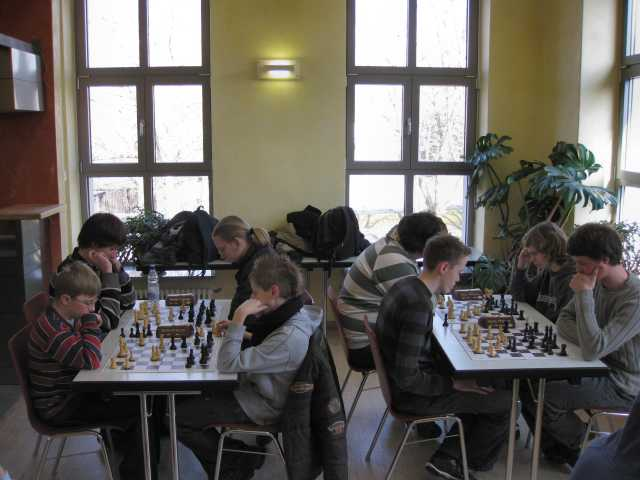

Wieder war das Alte Wasserwerk in Lörrach eine schöne Kulisse.

Die älteren spielten dieses Mal im oberen Stock.

Anstrengende Partien.

Am Ende freut sich Jochen mit Rafael.
Vier unserer Spieler kamen mit einem Pokal zurück:
| U14 | Daniel Bahner | Platz 1 | |
| Lukas Sterzik | Platz 2 | ||
| U18 | Tobias Oelschlegel | Platz 2 | |
| Rafael Sterzik | Platz 3 |
In der U16 war Nicolas Mesot mit dem 4. Platz sehr zufrieden, während
Jochen Bahner mit seinem 6. Platz doch sehr haderte.
Marvin Kläui belegte
in der U18 leider nur Platz 6 von 6 Spielern.